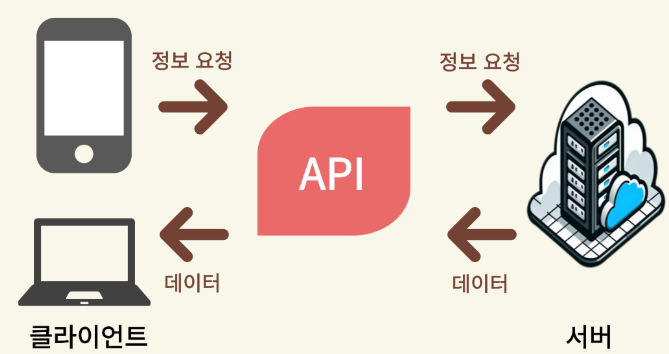

API¶
1절. 정의¶
API¶
- Application Programming Interface
- 소프트웨어 컴포넌트 간 통신을 돕는 매개체
- 데이터를 주고 받거나 기능을 공유하는 중간 다리
- 응용 프로그램 간 상호 작용하는 인터페이스
- 프로그램 소통 규칙
역할¶
| 역할 | 설명 |
|---|---|
| 데이터 교환 |
서로 다른 시스템 간 데이터 교환 |
| 기능 제공 |
특정 기능을 타 프로그램에서 활용 (ex : 결제, 로그인, 지도 서비스 등) |
| 코드 재사용 |
같은 기능을 여러 시스템에서 공통으로 사용 |
예시¶
| 예시 | 설명 |
|---|---|
| 날씨 | 기상청 서버에서 날씨 정보를 가져와 사용자에게 제공 |
| 지도 서비스 | 음식 배달 앱의 위치 정보 제공 |
| 소셜 로그인 | Google, Naver, Kakao 등 계정으로 간편 로그인 |
2절. 동작¶
동작 방식¶
- 클라이언트와 서버 간의 요청 및 응답

| 단계 | 설명 |
|---|---|
| Request | 클라이언트(Client)가 특정 주소(End Point)로 필요한 API 요청 |
| Process | 서버(Server)가 요청 해석 후 DB 조회나 로직 처리 |
| Response | 클라이언트가 처리 결과를 정해진 형식(JSON, XML 등)으로 반환된 데이터 응답 |
동작 활용¶
- 사용자 정보 조회
// 클라이언트 → (요청) → 서버
GET /users/123
// 서버 → (응답) → 클라이언트
{
"id": 215,
"name": "BangYunseo",
"email": "yunseobang33@gmail.com"
}
실제 동작 활용¶
1. API 키 발급¶
- 대부분의 API는 인증용 키(API Key) 필요
2. HTTP 요청¶
- GET : 데이터 조회 요청
- POST : 새로운 데이터 생성 요청
3. 응답 확인¶
- JSON or XML 형식으로 반환된 데이터 확인
실제 API 동작 예시 : 서울시 공공 데이터 지하철 통계¶
import requests
url = 'http://openapi.seoul.go.kr:8088/sample/json/CardSubwayStatsNew/1/5/20220301'
response = requests.get(url)
print(response.json())
3절. API 기능¶
종류¶
| 종류 | 설명 | 예시 |
|---|---|---|
| Open(Public) | 누구나 사용하도록 공개된 API | Google Maps, 공공데이터포털 등 |
| Private(Internal) | 기업 내부 시스템 간 통신용 | 사내 인사 관리 시스템 연동 |
| Partner | 특정 파트너사와 협업을 위해 제공하는 API | - 결제 게이트웨이 API(PayPal, Stripe 등) |
| Composite | 여러 개의 API를 한 번의 요청으로 호출하도록 구성된 API |
유형¶
| 유형 | 특징 |
|---|---|
| REST(RESTful) API | - 가장 널리 사용되는 방식 - HTTP 프로토콜 기반 API - 데이터는 주로 JSON 형식으로 교환 - REST의 원칙을 따르며 URL로 리소스를 식별하고 HTTP 메서드 사용 |
| SOAP API | - XML 기반 API - XML 기반으로 높은 보안성과 안정성이 필요한 경우(ex: 금융 시스템) 사용 - 비교적 무거운 편 |
| GraphQL API | - 필요한 데이터만 선택적으로 요청할 수 있는 API - REST보다 유연한 데이터 요청 가능 |
| gRPC API | - 바이너리 형식(Protocol Buffers)을 사용하는 API - 빠른 성능과 효율성 제공(ex: 마이크로서비스 통신) |
호출 방식(HTTP 메서드)¶
| HTTP 메서드 | 설명 | 예시 |
|---|---|---|
| GET | 리소스 조회 | GET/users/123 |
| POST | 리소스 생성 | POST/users |
| PUT | 리소스 전체 수정 | PUT/users/123 |
| PATCH | 리소스 일부 수정 | PATCH/users/123 |
| DELETE | 리소스 삭제 | DELETE/users/123 |
보안(Security)¶
- API는 외부에서 접근 가능
-
보안이 매우 중요
-
보안 기법
| 종류 | 설명 |
|---|---|
| 인증(Authentication) & 인가(Authorization) | - API Key: 고유한 키를 사용한 API 접근 제어 - OAuth 2.0: 토큰 기반 인증 방식 - JWT(JSON Web Token): 사용자 인증 및 정보 전달 |
| HTTPS 사용 | API 통신 암호화로 데이터 보호 |
| CORS(Cross-Origin Resource Sharing) | 도메인 간 요청 제어 후 보안 강화 |
| Rate Limiting | 한 사용자 또는 IP에서 일정 시간 내 요청 수 제한 |
4절. API 활용¶
로그인 API¶
- 요청
- 응답
날씨 정보 API¶
-
OpenWeather API
-
요청
- 응답
번역 API¶
-
Google Translate API
-
요청
- 응답